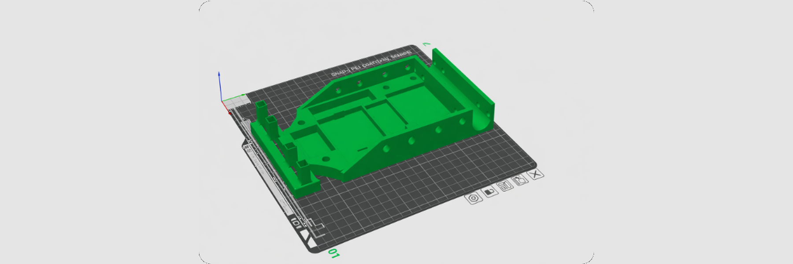

Project
Design and build an autonomous vehicle capable of following a marked trajectory using line detection sensors.
A mobile carriage was developed whose structural design was modeled in CAD and manufactured by 3D printing. The system integrates line detection sensors, control electronics, and actuators for movement. The system was programmed to adjust the vehicle's trajectory and maintain continuous line following at constant speed.
CAD model design, mechanical assembly, electronics integration, algorithm programming for following, and functional testing.
An autonomous vehicle capable of following a defined trajectory stably was obtained.